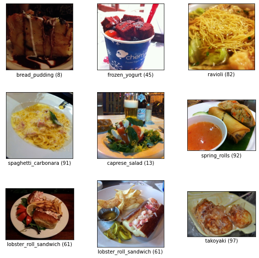
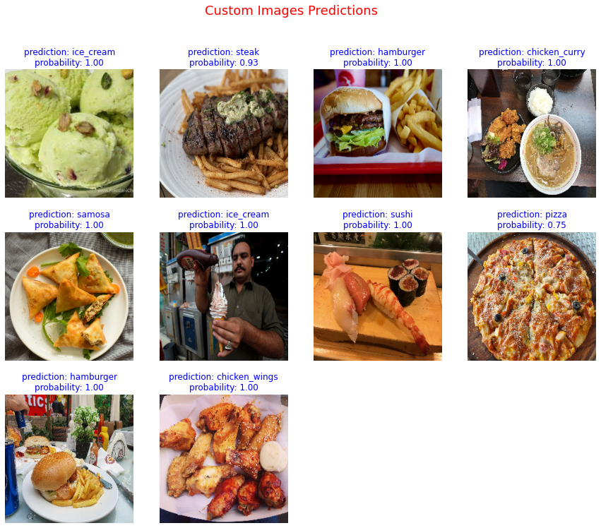

DL - CNN Tensorflow
Vision - Food Image Classifier.
For this project I built a food classifier to identify food from different food images. This project aim was to beat 77.4% top-1 accuracy of
DeepFood paper.
I was able to get the model to predict the class of the food from 101 classes with 70% accuracy with out fine-tuning and 80% with fine-tuned model.
To get these results I used transfer learning (no fine-tuning) on a existing noncomplex pretrained (on ImageNet) Convolutional Neural Network (CNN) model "EfficienetNetB0".
This created time efficiencies and solid results.
Further experiments are needed to improve the accuracy like using more complex pretrained models (EfficienetNetB4 or ResNet34).
More Details
I started this project with binary classification problem by making a model that was able to classify Pizza or steaks foods. This experiment was also done on a
simple CNN models, having no more then 2 Conv2D (8 - 16 filters) hidden layers and AveragePooling layer. These models were able to achieve above 85% accuracy.
After simple experiments I started adding more classes and did two main experiments, first with 10 classes and last with 101 classes.
The target goal was to beat two papers, 50.76% top-1 accuracy of "Food101 paper"
and 77.4% top-1 accuracy of "Deepfood paper"
that were also build on the same datasets. Details are in the following sections.
-
Exporatory Data Analysis
Both experiments contained same type of data but with different amount and classes of data.
In experiment #1, the food-101 data was downloaded from Kaggle
and using python script 10 random classes with there train and test images were extracted. While in case of experiment #2 the
tensorflow dataset API with data API was used to make the process easy and efficient by using `.prefetch()` and `.AUTOTUNE`
features. Other EDA's are in the table.
|
Experiment #1 |
Experiment #2 |
| Data Source |
Kaggle |
TensorFlow Datasets |
| Classes |
10 |
101 |
| Individual Class |
750 x 10 |
750 x 101 |
| Train Data |
7,575 Images |
75,750 Images |
| Test Data |
25,250 Images |
25,250 Images |
| Normalization |
Yes |
Yes |
| Data Augmentation |
No |
No |
| Data loading |
pandas |
tf.data API |
Few examples from the traning dataset.

-
Model Building
Both main experiments were done on EfficienetNet-B0 architectures. These pretrained models were loaded uisng tensorflow.applications utility.
I used BO version because it is less dense as compared to B7 and I wanted to do an experiment with fine-tuning the layers, so training
B7 model with fine tuning would've taken alot of time and resources. Experiment #2 model was trainied 100 epochs but with callback EarlyStopping as compared to
experiment #1 which was trainied 5 epochs and fine-tuned on another 5 (less epochs to avoid overfitting as it was trained only on 7,575 images)
|
Experiment #1 |
Experiment #2 |
| Architecture |
EfficienetNet-B0 |
EfficienetNet-B0 |
| Hidden layers |
237 |
237 |
| Fine-Tuned |
Yes |
Yes |
| Fine-Tunedlayers |
Last 5 |
All |
| Callbacks |
ModelCheckpoint |
ModelCheckpoint
EarlyStopping |
| Epochs |
10 |
100 (stopped at 5) |
-
Model Performance
Experiment #1 model achieved only 50% accuracy which was not surprising as it was trained on less data and epochs,
Nevertheless it was able to achieve the same accuracy as of our target goal 50.76% top-1 accuracy of "Food101 paper"
,which was trained on 75,000 images as compared to our 7000 images. But our experiment #2 achieved 80% accuracy and was able to beat the target goal
77.4% top-1 accuracy of "Deepfood paper".
Analysis and Prediction
To understand results and the decision function I also build Confusion Matrix between 101 classes and also calculated F1-score of each class.
To view these graphs and top most wrong predictions please visit my GitHub page, as these graphs were of
high dimensions so I didn't uploaded them on site.
Also other then test data I used custom images which were collected from different. These images were also preprocessed to match there dimension, shape and scale.
Out of 10 model predicted all correct with high probability scores.

To view the source code, evaluation metrics (Precision, Recall, F1-score), Confusion Matrix and Top wrong predictions, please
visit my Github page.